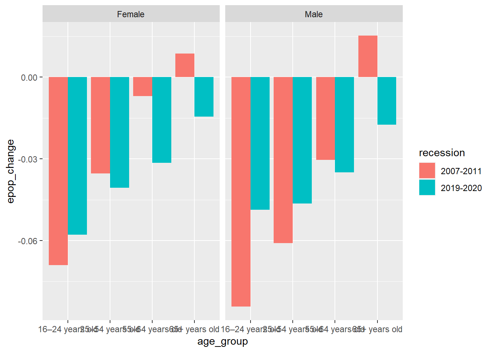

# import packages
library(tidyverse)
library(epiextractr)
library(here)Benchmarking workshop 2023
Benchmarking PowerPoint slides
Publication: Older workers were devastated by the pandemic downturn and continue to face adverse employment outcomes
import packages
Define CPS years
cps_years <- 2007:2020cps_vars <- c("year", "month", "age", "female", "emp", "basicwgt")# import basic CPS data
cps_data <- load_basic(cps_years, all_of(cps_vars)) %>%
# restrict to 16+
filter(age >= 16) %>%
# create age categories
mutate(age_group = case_when(
age <= 24 ~ "16–24 years old",
age >= 25 & age <= 54 ~ "25–54 years old",
age >= 55 & age <= 64 ~ "55–64 years old",
age >= 65 ~ "65+ years old"),
# adjust weight
wgt = basicwgt/12)Using EPI CPS Basic Monthly Extracts, Version 1.0.43https://www.bls.gov/cps/aa2020/cpsaat18b.htm
cps_data %>%
# restrict to employed
filter(emp == 1, year == 2020) %>%
# weighted employment count by year
group_by(year) %>% tally(wt = wgt) %>% mutate(n = n/1000)# A tibble: 1 × 2
year n
<int> <dbl>
1 2020 147795.# age category benchmark: https://www.bls.gov/cps/aa2020/cpsaat03.htm
cps_data %>%
# restrict to employed
filter(emp == 1, year == 2020) %>%
# weighted employment count by year
group_by(year, age_group) %>% tally(wt = wgt) %>% mutate(n = n/1000) %>%
# reshape data
pivot_wider(id_cols = year, names_from = age_group, values_from = n)# A tibble: 1 × 5
# Groups: year [1]
year `16–24 years old` `25–54 years old` `55–64 years old` `65+ years old`
<int> <dbl> <dbl> <dbl> <dbl>
1 2020 17192. 95310. 25469. 9824.Figure C: change in employment-to-population ratio across age categories
emp <- cps_data %>%
# isolate recession beginning and end years
filter(!is.na(emp),
year %in% c(2007, 2011, 2019, 2020)) %>%
# weighted employment * population count by year and age group
group_by(year, age_group) %>% summarise(emp = sum(emp * wgt), pop = sum(wgt)) %>%
# calculate EPOPs
mutate(epop = emp/pop) %>% pivot_wider(id_cols = age_group, names_from = year, values_from = epop) %>%
# calculate percent change in EPOPs
transmute(age_group = age_group, `2007–2011` = `2011`-`2007`, `2019–2020` = `2020`-`2019`) %>%
# output to output folder
write_csv(here("output/older_worker_epop.csv"))`summarise()` has grouped output by 'year'. You can override using the
`.groups` argument.Figure D: Change in employment-population ratios during the Great Recession and the COVID-19 recession, 2007–2011 and 2019–2020, by gender and older age group
epop_gender <- cps_data %>%
# isolate recession beginning and end years
filter(!is.na(emp),
year %in% c(2007, 2011, 2019, 2020)) %>%
# assign value of female as character label ("Female" instead of 1 and "Male" instead of 0)
#note: requires the installation of haven
#note: using double ":" is a way of referencing functions in a package without importing entire package
mutate(female = as.character(haven::as_factor(female))) %>%
# weighted employment * population count by year and age group AND female
group_by(year, age_group, female) %>% summarise(emp = sum(emp * wgt), pop = sum(wgt)) %>%
# calculate epops
mutate(epop = emp/pop) %>% ungroup() %>%
# reshape wider to calculate change in EPOPs over recession time perios
pivot_wider(id_cols = c("age_group", "female"), names_from = year, values_from = epop) %>%
# calculate percent change in EPOPs
transmute(age_group = age_group, female = female,
`2007-2011` = `2011` - `2007`, `2019-2020` = `2020` - `2019`) %>%
# reshape data longer for ggplot2
#note: change in epop by age group will group bars by recession time period, create panels by gender,
# reshape long for each dimension
pivot_longer(cols = c(`2007-2011`, `2019-2020`), names_to = "recession", values_to = "epop_change")`summarise()` has grouped output by 'year', 'age_group'. You can override using
the `.groups` argument.Create mock of Figure D using ggplot2
# change in epop by age group and recession time periods
ggplot(epop_gender, aes(x = age_group, y = epop_change, fill = recession)) +
# use position "dodge" to group bars instead of stacking
geom_col(position = "dodge") +
# use to create side-by-side panels for easier viewing
facet_wrap(~female)